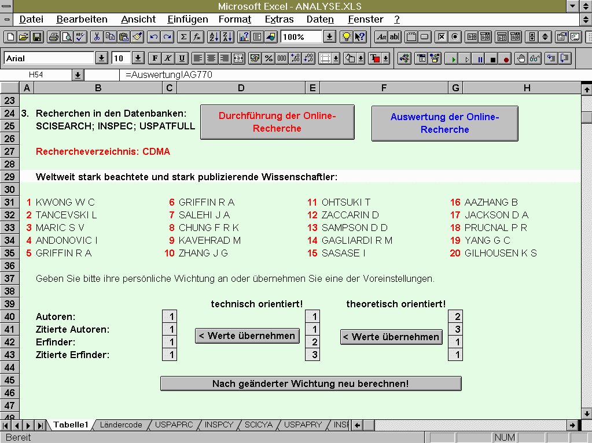
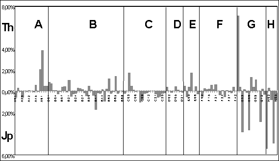

| Inhaltsverzeichnis |
5.3 Beispiele patentstatistischer Analysen
Beisiel 1: Teilautomatisierte patentstatistische Analysen für Endnutzer
Der Endnutzer benötigt im Rahmen der Unternehmensstrategie seine eigene nutzerspezifische Strategie auf der Basis einer patentstatistischen Analyse. Eine solche Analyse sollte standardmäßig vor Beginn jeder F&E-Aufgabe durchgeführt werden. Um von den Endnutzern keine spezifischen Kenntnisse zu Recherchemethodik, Retrievalsprache und Kommunikationssoftware zu fordern, wurde im PATON der TU Ilmenau ein weitgehend automatisierter Weg eingeschlagen. Dabei wurden ausgewählte Patent-, Zitier- und Literaturdatenbanken (zunächst die STN-Datenbanken USPATFULL, SCISEARCH und INSPEC) genutzt.
Bei dieser Analysemethode werden nach der Frageeingabe die
gewählten Datenbanken im Vergleich mit den anderen STN-Datenbanken nach ihrer
Trefferanzahl rangiert. Die sich automatisch anschließende Recherche stellt die
automatisiert zu analysierenden Dokumentennachweise bereit. Als Indikatoren für die
Bedeutung der Länder, Firmen und der anderen Feldelemente der Dokumentennachweise wird
neben der Publikationshäufigkeit die Zitierhäufigkeit verwendet. Während bei der
Ermittlung des SPI-Indikators die Verknüpfungsstärke der Indikatoren
Publikationshäufigkeit und Zitierhäufigkeit von vornherein festgelegt wurde, nimmt
nunmehr der Nutzer die Wichtung dieser Indikatoren selbst vor.
Abb. 3 zeigt einen Auszug aus dem Analyseergebnis für das Frageprofil
"CDMA". Die Wichtungsmöglichkeiten der Indikatoren sind ersichtlich. Sie werden
über die Wahl einer gestuften "technischen" oder "theoretischen"
Orientierung realisiert. Unter Berücksichtigung der Orientierungswahl werden die
führenden Länder, Firmen, Wissenschaftler und Techniker, die führenden
Veröffentlichungen und Zeitschriften sowie das Trendverhalten der gewählten
Technologiefelder angezeigt.
Beispiel 2: Patentstatistische Analyse für Thüringer Unternehmensförderung
Regionale Forschungspolitik zu konzipieren, verlangt einen
Vergleich des regionalen technologischen Entwicklungsstandes mit dem Weltstand der Technik
und seinen Entwicklungstendenzen.
Neben den USA und Europa verkörpert Japan in sehr vielen Technologiefeldern den
Weltstand der Technik und kann deshalb als einer der Vergleichsmaßstäbe dienen.

Abb. 3 Teilergebnis einer automatisierten patentstatistischen AnalyseAbb. 4 zeigt auf IPC-Klassenebene die Differenzen der Patentanmeldeprofile Thüringens und Japans. Daraus lassen sich die Thüringer, japanischen und gemeinsamen Profilschwerpunkte ermitteln.
Aus der weitergehenden patentstatistischen Analyse konnte wie
folgt geschlußfolgert werden:
Die existierenden Thüringer Profilschwerpunkte sind zeitgemäß. Neben der
Aufrechterhaltung traditioneller Schwerpunkte, wie der Möbel- und Glasherstellung sowie
der Meß- und Prüftechnik, sollten in Thüringen die Forschungsaktivitäten zu
Baukonstruktion und Medizintechnik verstärkt werden. Bei den gemeinsamen
Profilschwerpunkten dürften verstärkte Forschungsanstrengungen zur Förder-, Pack- und
Lagertechnik, zu Maschinenbauelementen sowie zur Fahrzeugtechnik erfolgversprechend sein.
Komplizierter ist die Berücksichtigung der japanischen Profilschwerpunkte in Thüringen.
Die meisten Gebiete scheinen "abgegrast". Thüringer Forschungsaktivitäten
könnten sich gerade auf diesen High-Tech-Gebieten als wenig erfolgreich erweisen.
Erfolgversprechend sind allerdings Teilgebiete wie z.B. die Entwicklung von Batterien
(IPC-Unterklasse H01M).

In der Abbildung ist die Differenz zwischen dem japanischen und Thüringer
Patentanmeldeprofil gemäß Internationaler
Patentklassifikation (IPC) dargestellt, um die Profilschwerpunkte
hervorzuheben.
Bei Technikgebieten, die relativ von beiden Ländern gleich stark belegt sind,
liegt die Differenz nahe Null.
Abb. 4 Differenzbetrachtung der Patentanmeldeprofile Thüringens (Th) und Japans (Jp) für alle Technikgebiete (IPC-Klassen)
Diese Analyse unterstützte die Thüringer Firma Gaia Akkumulatorenwerke GmbH in Nordhausen-Bielen, die Herstellung neuartiger Lithium-Feststoff-Batterien durchzusetzen.
Beispiel 3: Patentstatistische Analyse zur Flüssigkristall-Forschung
Die Existenz von Zitierungen sowie die Zitierhäufigkeit können ebenfalls zur Bewertung von Erfindungen sowie von deren Erfindern und Anmeldern verwendet werden, denn Zitieren bedeutet Bewerten. Von besonderer Bedeutung dürften jene Erfindungen sein, die in wissenschaftlichen Zeitschriftenartikeln sowie häufig in Patentschriften zitiert werden. Folglich ist es zweckmäßig, mittels des Derwent Patents Citation Index (DPCI) und Science Citation Index (SCI) technisch und zugleich wissenschaftlich bedeutsame Erfindungen zu ermitteln. Der nachfolgende Zeitungsartikel (Freies Wort 22.7.1997) nennt als Hauptergebnis einer journalistischen Analyse zur Flüssigkristall-Forschung den ermittelten Top-Techniker D.Demus, den umwälzenden Charakter seiner technischen Lösungen und das japanische Interesse an seiner Person:
| Hierzulande: Erfinder Demus Dietrich Demus aus Halle erfand sie: die LCD-Anzeige, die rotleuchtende Zahlenreihe auf Taschenrechnern, Videorecordern und digitalen Armbanduhren. Selbst Computer-Notebooks wären ohne Demus undenkbar gewesen. Die Bildschirme blieben blind – ohne die LCD-Flüssigkristall-Forschung Marke Demus. Ende der 60er Jahre arbeitete Prof. Demus mit einer Forschungsgruppe der Luther-Universität an der umwälzenden Neuerung. Technologisch war man dem Westen zwei Schritte voraus. Heute arbeitet Prof. Demus für einen japanischen Chemie-Konzern – für die Konkurrenz von einst. MDR, heute, 21.30 Uhr. |
Es besteht die Frage, ob eine patentstatistische Analyse zur Flüssigkristall-Forschung mittels Science Citation Index (SCI) mit weniger Aufwand ähnliche Ergebnisse geliefert hätte.
Die Antwort lautet: Ja.
Wenn wir als Top-Techniker einen Wissenschaftler bezeichnen, der besonders häufig
sowohl als Autor als auch als Erfinder zitiert wird, dann lassen sich diese Ergebnisse
mittels SCI ermitteln.
Abb. 5 zeigt das Ergebnis der SCI-Analyse, nachdem D.Demus zuvor in der Patentdatenbank World Patent Index (WPI) als aktiver Erfinder ermittelt wurde. Die Rangreihen der zitierten Erfinder und Autoren (RIN und RAU) weisen D.Demus eindeutig als den Top-Techniker aus, auch wenn sein Rang bereits sinkt. Abb.5 zeigt auch das japanische Interesse an D.Demus und beweist zugleich, daß D.Demus nur in Japan als der Top-Techniker erkannt wurde.
| Technologiefeld | Flüssigkristalle (liquid crystal?) |
| STN-Datenbank: | SCISEARCH |
| Dokumentennachweise: |
18.688 (März 94) / 28.401 (März 98) |
Rangfolgen der zitierten Erfinder (RIN) und zitierten Autoren (RAU)
1994 |
1998 |
||
RAU |
RIN |
RAU |
RIN |
| DEGENNES P G | CALUNDANN G W | DEGENNES P G | CALUNDANN G |
| GRAY G W | KWOLEK S L | GRAY G W | KWOLEK S L |
| PERCEC V | SCHAEFGEN J R | PERCEC V | JACKSON W J |
| FINKELMANN H | DEMUS D | CHANDRASEKHAR | SCHAEFGEN J |
| DEMUS D | JACKSON W J | MAIER W | FERGASON J L |
| CHANDRASEKHAR | FERGASON J L | FLORY P J | DEMUS D |
| FLORY P J | KUHFUSS H F | CLARK N A | KUHFUSS H F |
| CLARK N A | COTTIS S G | MEYER R B | COGSWELL F N |
| MAIER W | COGSWELL F N | FINKELMANN H | ISAYEV A I |
| BLADES H | DEMUS D | COTTIS S G | |
| KLEINSCHUSTER | GOODBY J W | KLEINSCHUSTER | |
Rangfolge der Herkunftsländer der Autoren,die D.Demus als Erfinder oder Autor zitieren
| Rangfolge der Länder, die Demus als Autor zitieren | Rangfolge der Länder, die Demus als Erfinder zitieren |
| %DOC CYA | %DOC CYA |
| 25.84 GERMANY | 38.33 JAPAN |
| 17.19 USA | 25.00 GERMANY |
| 8.97 JAPAN | 11.67 ENGLAND |
| 8.10 FRANCE | 8.33 SWITZERLAND |
| 7.51 ENGLAND | 5.00 GERMAN DEM R |
| 6.64 USSR | 6.66 RUSSIA |
| 5.61 INDIA | 1.67 AUSTRALIA |
| 4.74 GERMAN DEM R | 1.67 EGYPT |
| 4.74 POLAND | 1.67 INDIA |
| 2.61 RUSSIA | 1.67 ISRAEL |
| 2.29 ITALY | 1.67 SOUTH KOREA |
| 2.17 SPAIN | 1.67 USA |
Abb. 7 Patentstatistische Analyse mittels Science Citation
Index (SCI)
| Inhaltsverzeichnis |